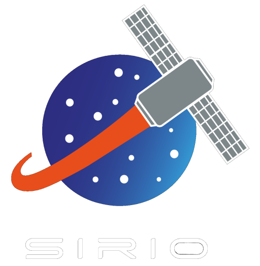

<nav class="navbar navbar-expand-lg navbar-light bg-light">
    <div class="container-fluid">
        <a class="navbar-brand" routerLink="/Inicio">
            
        </a>
        <button class="navbar-toggler" type="button" data-bs-toggle="collapse" data-bs-target="#navbarNav" aria-controls="navbarNav" aria-expanded="false" aria-label="Toggle navigation">
    <i class="fa-solid fa-bars" style="color: #ffffff"></i>
  </button>
        <div class="collapse navbar-collapse" id="navbarNav">
            <ul class="navbar-nav">
                <li class="nav-item">
                    <a class="nav-link" routerLinkActive="active" routerLink="/Inicio">Home</a>
                </li>
                <li class="nav-item">
                    <a class="nav-link" routerLinkActive="active" routerLink="/Acerca">Acerca de</a>
                </li>
                <li class="nav-item">
                    <a class="nav-link" routerLinkActive="active" routerLink="/Proyectos">Proyectos</a>
                </li>
                <li class="nav-item">
                    <a class="nav-link" routerLinkActive="active" routerLink="/Diviertete">Diviertete</a>
                </li>
                <li class="nav-item">
                    <a class="nav-link" routerLinkActive="active" routerLink="/Noticias">Noticias</a>
                </li>
                <li class="nav-item">
                    <a class="nav-link" routerLinkActive="active" routerLink="/Contacto">Contacto</a>
                </li>
            </ul>
        </div>
    </div>
</nav>